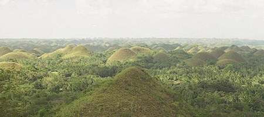
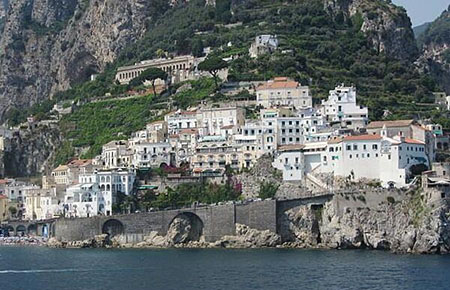

The Philippines are known for its wildlife, with so many natural treasures found all around
My favorite memories of the Philippines are of my family and I scuba diving!

Chocolate Hills in Bohol Philippines. (Photo from: The World Factbook)
Italy
to
I went back to Italy to finish highschool!
This probably marked some of the best years of my life.
It is also when I first went to Amalfi coast, which is now likely my favorite place on this planet, with such beautiful scenery, beaches, and amazing food.

Houses lining the Italian West Cost in Amalfi. (Photo from: The World Factbook)
Florida
to
I moved to Miami to start my Undergraduate career!
As a now graduating senior, I can look back at these 4 years with a lot of gratitude, meeting so many amazing friends and gaining so many valuable experiences.
My favorite place in Florida is likely any beach, just spending a relaxing weekend with friends